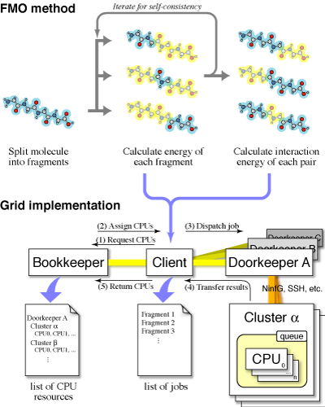

last updated: Aug. 14, 2006
| To do | Status |
|---|---|
| (1) Modeling | Done |
| (2) Setup binaries | Done |
| (3) Deployment & testing | Done |
| (4) Setup Grid environment | in operation |
| (5) Real calculation | in operation |
The second stage experiments started. To improve the approximation, the size of each job is increased while the number of jobs is reduced. Devices to take load balance will become necessary, I guess.
Spacial geometries of the target molecular system were generated by using Molecular Mechanics (MM) method. Rough geometry is generated by algorithm, followed by the energy minimization in MM method. Bugs (both in my brain and in the MM program) were now removed, hopefully, and the first series of geometries is now generated. We will generate three more series, if the first set works.
(Non-grid) binaries are setting up by using ifort 9.0 compiler. Intel libraries are linked statically (-i-static), while standard libraries are linked dynamically.
The nightmare of the "NaN" happened with the new compiler, which is resolved. (It was due to the inconsistency of the floating-point precision between intel internal form and IEEE one.)
| Site | Install | Test 1 (small) | Test 2 (FMO) |
|---|---|---|---|
| SDSC | Done | pass | pass |
| AIST | Done | pass | pass |
| NCSA | Done | pass | pass |
| ASCC | Done | pass | pass |
| Osaka-cafe | Done | pass | pass |
| Osaka-tea | Done | pass | pass |
| JLU | Done | pass | pass |
| MIMOS | Done | pass | pass |
| UNIZH | Done | pass | pass |
| BII | Done | pass | pass |
The performance of machines is measured by Test 2. The results will be used for the load balancing among cluster machines.
On some queue systems, it seems that parallel job submissions sink down deeply to the bottom of the queue, when a sequence of single jobs are submitted continuously. Starving scheduling is necessary for the salvation, where jobs are processed strictly FIFO manner (as in the NCSA site). Note that, with the starving scheduling, operating rate of the computational resources will be suffered while waiting for the resources for the parallel job become available. On SGE, such a starving scheduling is possible by setting max_reservation parameter of the scheduler and by adding "-R y" option on qsub.
Old DDI library seems not to work sane with MAXCPUS = 1.
Here is a short note about portability of binaries.
| site | CPU | Mem/GB | test2/min | rsh? | HT | Queue | Scratch |
|---|---|---|---|---|---|---|---|
| SDSC | Xeon(2.4)x2 x 15 | 2 | 39,.6 | NG | ON | SGE | /state/partition1/scratch |
| NCSA | Xeon(2.0)x2 x 12 | 2 | 41.2 | NG | ON | PBS | /tmp |
| ASCC | Xeon(2.4)x1 x 3 | 1 (5) | 151.0 (1) | OK | OFF | PBS | /tmp |
| AIST | Pen3(1.4)x2 x 14 | 1 | 35.9 | OK | - | SGE | /work/ikegami |
| cafe | Xeon(2.8)x2 x 19 | 2 | 22.9 | OK | ON | SGE | /work |
| tea | Pen3(1.4)x2 x 39 | 1 | 39.1 | OK | - | SGE | /work |
| JLU | Xeon(3.0)x1 x 1 | 1 | 214.7 (3) | - | ON | fork | /tmp |
| MIMOS | Athron(0.8)x1 x 4 | 2 | 43.4 (2) | NG | - | SGE | /state/partition1 |
| UNIZH | Xeon(2.8)x2 x (6-1) | 2 | 31.3 | NG | OFF | SGE | /state/partition1 |
| BII | Pen3(1.4)x2 x 3 | 2 | 63.5 (4) | NG | - | SGE | /state/partition1 |
| f32 | Xeon(3.1)x2 | 4 | 20.9 | NG | OFF | SGE | /work |
| p32 | Opteron(2.0)x2 | 6 | 17.8 | NG | - | PBS | /work |
| m64 | Itanium(1.3)x4 | 16 | 30.6 | NG | - | PBS | /work |
The wall clock time of test 2 is measured at node x cpu = 5x2 configuration, except that:
Binaries are compiled by ifort 9 (minor version may vary) with option '-O3'. On ume, option '-mtune pentiumpro' is added. For Opteron machine (p32), PathScale compiler was used.
Scores of SDSC and NCSA were not as good as expected. The reason is unknown. I got parallel results in 10x1 configuration, so that the HyperThreading will not be guilty.
| site | setup | test |
|---|---|---|
| SDSC | done | done |
| NCSA | done | done |
| ASCC | done | done |
| AIST | done | done |
| cafe | done | done |
| tea | done | done |
| JLU | ||
| MIMOS | done | done |
| UNIZH | ||
| BII | ||
| f32 | done | done |
| p32 | done | done |
| m64 | done | done |
SDSC: globus-job-run rocks-52.sdsc.edu -env SGE_PE=mpi_2 -np 2 /bin/hostname NCSA: globus-job-run tgc.trecc.org/jobmanager-pbs -queue pragma /bin/hostname ASCC: globus-job-run pragma001.grid.sinica.edu.tw/jobmanager-pbs -queue long /bin/hostname AIST: globus-job-run ume.hpcc.jp -env SGE_PE=mpich_2 -np 2 /bin/hostname MIMOS: globus-job-run nucleus.mygridusbio.net.my -np 2 /bin/hostname cafe: globus-job-run cafe01.exp-net.osaka-u.ac.jp/jobmanager-sge -env SGE_PE=mpi_2 -np 2 /bin/hostname tea: globus-job-run tea01.exp-net.osaka-u.ac.jp/jobmanager-sge -env SGE_PE=mpi_2 -np 2 /bin/hostname
On NCSA, ASCC, and AIST sites, the PATH environment variable
is overridden by Globus.
As a result, paths added in .bashrc, such as $HOME/bin, are not
accessible.
It is resolved by specifying the PATH variable explicitly, like '-env
PATH=...'
On NCSA site, however, the PATH variable seems to be immutable.
As a last resort, I have added a quick hack to the NinfG stub program
itself to modify the PATH.
PATH overridden patch is now removed on NCSA site.
Thank you, Tom!
The AIST CRL (certificate revocation list) file seems not to be
updated on most some of the CRL aware sites (er, all of them, actually).
This causes refusal of the Globus access with the AIST certificates,
so that I cannot test at all.
Please update the AIST CRL file.
The latest AIST CRL file will be found
here.
Unfortunately, the CRL file is updated on every 30-alpha days.
We are working on the automation of the update process.
Different from GT3.x, the reverse lookup of server IP address is requisite to pass the GT4.x authentication. Sites without reverse-lookup entry cannot be accessed with GT4.0.
On ASCC site, jobmanager-pbs currently uses rsh to deploy multiple-type jobs. Unfortunately, rsh to the local host (with short name) fails on the ASCC:
[pragma001]% rsh pragma001 echo Permission denied. [pragma001]% rsh pragma001.grid.sinica.edu.tw echo [pragma001]%As a workaround, you have to set ~/.rhosts file.

In the FMO method, the electronic state of the whole molecule is calculated by splitting it into small fragments. The electronic state of each fragment is calculated under the electrostatic environment posed by the other fragments. The environment is then reconstructed from the calculated electronic states, so that the calculation should be iterated to the self-consistency. To improve the accuracy, the electronic states of the fragment pairs are also calculated after the convergence.
In the Grid implementation of FMO, there are three main players: Bookkeeper, Doorkeeper, and Client. The Bookkeeper keeps track of available CPU resources, while the Doorkeeper handles actual CPU resources. First, the Client (= the GridFMO application) asks the Bookkeeper for available CPU resources. Once CPUs are assigned, the Client asks the corresponding Doorkeeper to execute a job. Files necessary to process the job are transfered as a tar-ball to the assigned master CPU via the Doorkeeper. A list of assigned CPUs is also transfered, so that the job can be processed in (fine-grained) parallel. Resultant files after the job are transfered back, as a tar-ball, to the Client. Finally, the Client returns the assigned CPUs to the Bookkeper for the recycle. These players can be run as separate processes, or as independent threads in a single process.
The Doorkeeper also communicates directly with the Bookkeeper; when CPUs become available (through backend queue systems, for example), the Doorkeeper registers them to the Bookkeeper. When the Client detects an error in dispatching job to a cluster, the cluster is marked as bad on the Bookkeeper. The cluster is disabled if the number of bad marks exceeds a limit. It may be re-enabled manually, after the trouble is removed.
The first run started on 2006-05-15 18:13:32 JST and finished on 2006-05-21 06:26:03. In this run, a single NinfG Doorkeeper was setup, which manages 7 cluster machines: SDSC, NCSA, ASCC, AIST, and three AIST Super Cluster machine. All Bookkeeper, Doorkeeper, and Client are launched at AIST site as separate processes. During the first run, Client was restarted 3 times, while Bookkeeper and Doorkeeper were done 2 times.
Main part of Bookkeeper and Doorkeeper are written in Perl. Thanks to the script nature, we could apply patches on those processes on-the-fly through the interactive console attached to them. Of cource, this console access also offeres a beautifully easy way to blow everything up in the air.
In the figure above, a part of timeline of the run is shown. Each tiny box corresponds to an electronic state calculation of a fragment, which was performed on the assigned nodes. NinfG stubs are enqueued via GRAM, which are used as soon as the machine resources become available. When the stubs are killed (due to wall clock time limit, for example), the assigned job is returned with error, and then is reassigned to other machines.
{kind=link}